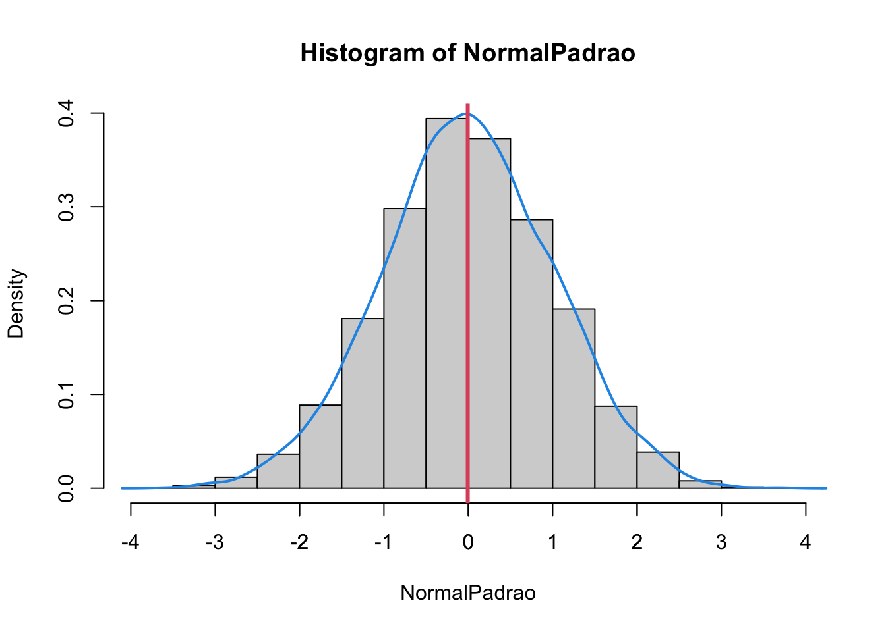
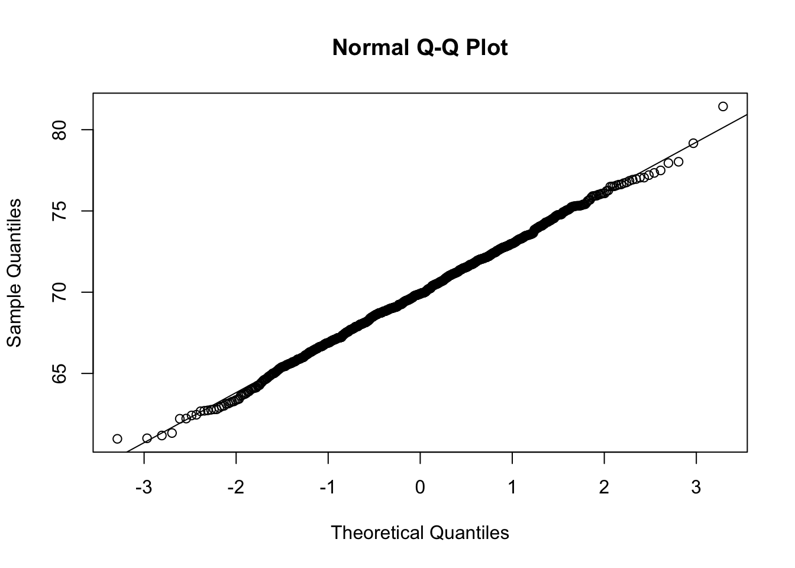

Capítulo 13 Distribuição de Probabilidade!
Uma distribuição de probabilidade é um modelo matemático que associa um dado valor de uma váriavel a sua probalibilidade de ocorrer.
A distribuição Normal (ou Gaussiana) é uma das distribuições de probabilidade mais utilizadas na estatística.
Outras distribuições de probabilidade: Binomial, Poisson, Exponencial, Uniforme, Qui-quadrado, T-Student, Gama, Weibull, Lognormal…
13.1 Distribuição Normal
A distribuição Normal pode ser usada para modelar muitos conjuntos de medidas na natureza, na indústria e nos negócios. Por exemplo, a pressão sanguínea sistólica dos humanos, a vida útil de televisões de plasma e até mesmo custos domésticos (LARSON, 2015).
A distribuição Normal é definida por dois parâmetros: média e desvio padrão.
Características da Distribuição Normal
Tem forma de um sino
É simétrica em relação a média
O valor da média, mediana e moda são iguais
Para toda distribuição de probabilidade
A área total abaixo da curva é igual a 1
A área representa a probabilidade
Teoricamente o comportamento da Distribuição Normal é dado por:

{kind=link}
Onde:
- A média está representada por \(\mu\)
- O devio padrão está representado por \(\sigma\)
Regra empirica 68% - 95% - 99,7%
Se os dados seguem distribuição Normal podemos afirmar que
68% dos dados concentram se no intervalo: [ média - 1dp ; média - 1dp]
95% dos dados concentram se noo intervalo: [ média - 2dp ; média - 2dp]
99,7% dos dados concentram se noo intervalo: [ média - 3dp ; média - 3dp]
Isso significa dizer que eventos que estão fora do intervalo [ média - 3dp ; média - 3dp] são eventos raros!
Exemplo de distribuição Normal, com dados simulados usado a função rnorm().
# semente de geração de números aleatórios
set.seed(1)
# Será simulada uma amostra com a seguinte característica:
# 1000 valores
# média ~ 70
# desvio padrão ~ 3
# A função rnorm() gera números randômicos com comportamento de uma distribuição Normal
BatimentosMulheres <- rnorm(1000, 70, 3)
# Arrendodamento com nenhuma casa depois da vírugula
BatimentosMulheres <- round(BatimentosMulheres,0)
# histograma
hist(BatimentosMulheres)
## [1] 60 62 64 66 68 70 72 74 76 78 80 82## [1] 8 35 85 177 264 227 128 57 17 1 1# histograma e curva de densidade (da Dist. Normal)
hist(BatimentosMulheres, prob = TRUE)
lines(density(BatimentosMulheres), col = 4, lwd = 2)
# idicação da média
abline(v = mean(BatimentosMulheres), col = 2, lwd = 3)
## Min. 1st Qu. Median Mean 3rd Qu. Max.
## 61.00 68.00 70.00 69.97 72.00 81.00## BatimentosMulheres
## 69 70 71 72 68 67 73 66 74 75 65 64 63 76 77 61 62 78 79 81
## 138 126 116 111 95 82 82 56 46 41 29 18 17 16 15 4 4 2 1 1## [1] 3.10594## [1] 4.438833As funções pnorm() e dnorm() é usada para calcular a probabilidade de um evento que segue uma distribuição, a qual conhecemos a média e o desvio padrão.
Exemplo: Sabendo que os batimentos cardíacos de mulheres de 18 a 65 anos tem média de 70bmp e desvio padrão igual a 3bmp.
Calcule as probabilidades:
- de uma mulher ter batimentos inferior a 70bmp, ou seja, \(P(x<70)\):
## [1] 0.5- de uma mulher ter batimentos superior a 70bmp, ou seja, \(P(x>70)\):
## [1] 0.5- de uma mulher ter batimentos igual a 70bmp, ou seja, \(P(x=70)\):
## [1] 0.1329808- de uma mulher ter batimentos entre 67 e 73bmp \(P(67 < x < 73)\):
## [1] 0.6826895- de uma mulher ter batimentos entre 67 e 73bmp \(P(64 < x < 76)\):
## [1] 0.9544997- de uma mulher ter batimentos entre 61 e 79bmp \(P(61 < x < 79)\):
## [1] 0.9973002- de uma mulher ter batimentos maior que 90bmp \(P(x > 90)\):
## [1] 1.308398e-11- de uma mulher ter batimentos menor que 65bmp \(P(x < 65)\):
## [1] 0.0477903513.2 Diagnóstico de Normalidade (QQ)
Uma forma visual para verificarmos a normalidade dos dados é a atravé do gráfico QQ.
A ideia desse gráfico é comparar a distribuição da nossa amostra com uma distribuição Normal padrão.
A característica da distribuição Normal Padrão é que ela tem média igual a zero e devio pardrão igual a 1.
Qualquer distribuição Normal pode ser convertida em uma distribuição Normal Padrão (por meio do cálculo escore z), é mais o menos o que o gráfico QQ faz.
O z escore é dado por: z = (valor - media)/dp
Veja um exemplo no R para uma distribuição normal padrão
set.seed(1)
# rnorm(10000, 0, 1): normal padrão média 0, dp=1
# ou simplesmente rnorm(10000)
NormalPadrao <- rnorm(10000)
hist(NormalPadrao, probability = T)
lines(density(NormalPadrao), col = 4, lwd = 2)
axis(side = 1, at = seq(-3, 3, by = 1), labels = seq(-3, 3, by = 1))
abline(v = mean(NormalPadrao), col = 2, lwd = 3)
o intervalo -1 a 1 em torno da média: [ media - 1dp ; media + 1dp ]
o intervalo -2 a 2 em torno da média: [ media - 2dp ; media + 2dp ]
o intervalo -3 a 3 em torno da média: [ media - 3dp ; media + 3dp ]
Um gráfico QQ compara os quantis de uma amostra com os quantis de uma distribuição teórica normal. Se os pontos no gráfico seguirem uma linha reta, isso sugere que os dados são normalmente distribuídos.
Distrbuição normal é usada para dados contínuos!
# Gráfico QQ
set.seed(1)
BatimentosMulheres <- rnorm(1000, 70, 3)
qqnorm(BatimentosMulheres)
qqline(BatimentosMulheres)
# Faça o arredondamento
BatimentosMulheresR <- round(BatimentosMulheres,0)
qqnorm(BatimentosMulheresR)
qqline(BatimentosMulheresR)
A distribuição Normal é uma distribuição para modelar variáveis CONTÍNUAS!